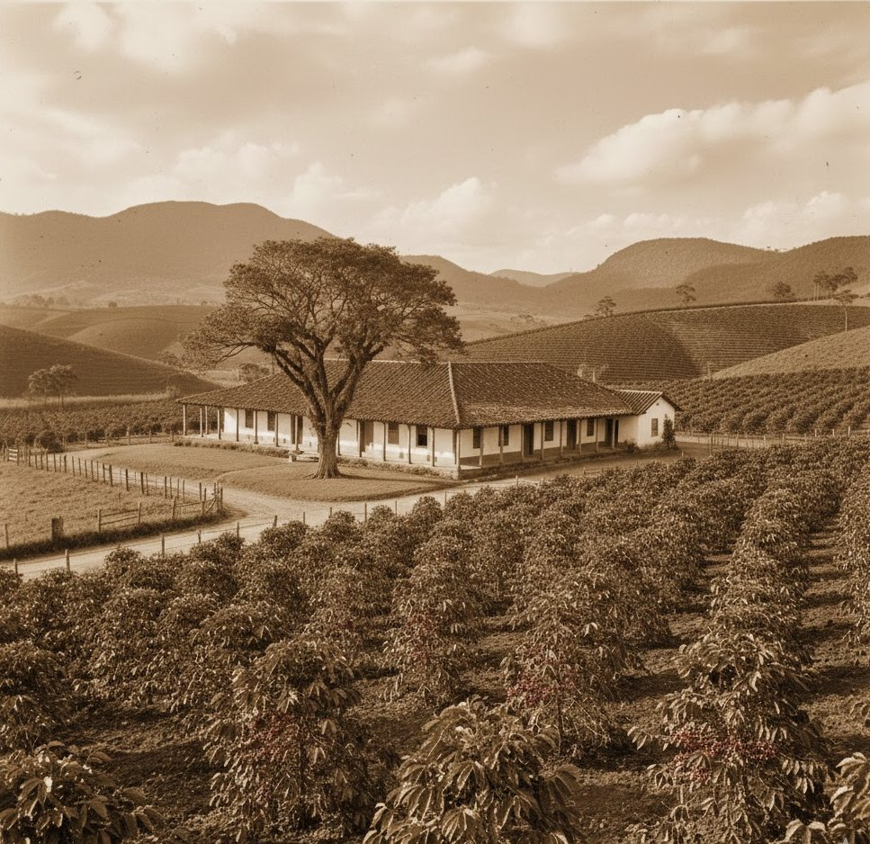

FAQ - Dúvidas e Informações
Precisa de mais informações ?
Chame nossos especialistas através dos nossos contatos oficiais:
A Grão de Ouro nasceu no coração das montanhas mineiras com um propósito simples: provar que o café pode ser uma experiência sensorial completa. O que começou como uma pequena plantação familiar, hoje é uma curadoria rigorosa que seleciona apenas os grãos que atingem a pontuação máxima em doçura e aroma. Não vendemos apenas energia para o seu dia; entregamos o resultado de meses de cuidado, desde a floração do cafeeiro até a precisão da torra final.
Para quem não abre mão do aroma de café fresco moído na hora. Nossos grãos inteiros preservam todas as notas sensoriais e óleos naturais até o momento do preparo.
Ideal para: Moedores manuais, automáticos e apreciadores do ritual completo.
Destaque:Máximo Frescor

Moagem de precisão realizada logo após a torra. Desenvolvemos uma granulometria média-fina que se adapta perfeitamente aos filtros de papel e de pano.
Ideal para: Cafeteira elétrica, Hario V60 e o clássico coador de pano.
Destaque: Pronto para o Dia a Dia.

Todo o corpo e intensidade do nosso blend clássico agora em cápsulas biodegradáveis. Uma extração perfeita, com crema densa e sabor persistente em segundos.
Ideal para: Máquinas compatíveis com o sistema Nespresso®.
Destaque: Intensidade em Segundos.


(Ana Silva)
4.5
"O café Grão de Ouro mudou minhas manhãs. Nunca imaginei sentir notas de jasmim tão nítidas em um café puro!"

(Marcio Oliveira)
3.8
"Atendimento impecável e o Grão de Ouro é, sem dúvida, o melhor custo-benefício para quem ama cafés especiais."

(Beatriz Costa)
4.8
"A entrega é super rápida e o aroma que sai da embalagem quando abrimos a caixa é indescritível."
(Mariana Lima)
4.3
"Gente, o perfume que esse café deixa na cozinha é maravilhoso! Acordo cedo só para passar meu Grão de Ouro e começar o dia bem. Vale cada centavo."

(Lucas Costa)
5
"Comprei alguns pacotes para presentear meu pai e ele amou. A embalagem dourada é linda e o café é muito superior aos convencionais de super mercado. Vou comprar para mim agora!"

(Sergio Vieira)
4.6
"Estava acostumado com café de prateleira, mas depois que provei o moído da Grão de Ouro, não consigo mais tomar outro. É um investimento que compensa muito pelo sabor.""

(Camila A.)
5
"Minha rotina é uma correria e as cápsulas salvam meu dia. É o único café de cápsula que realmente tem gosto de café de verdade, bem encorpado e fresquinho."

(Paulo Mendes)
5
"Já é minha terceira compra e a qualidade nunca muda. O atendimento pelo WhatsApp também foi super rápido e atenciosos quando tive dúvida sobre a moagem. Recomendo de olhos fechados!"
Precisa de mais informações ?
Chame nossos especialistas através dos nossos contatos oficiais:
Baixe nossas tabelas de infromações:
Preços a partir de R$60,00
Frete Grátis comprando acima de R$250,00